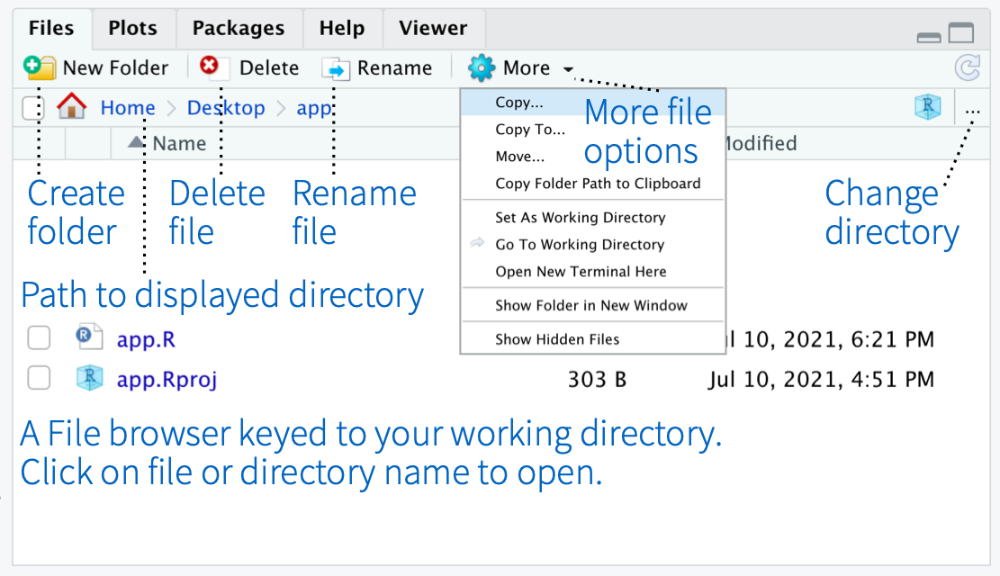

# Example: Simple calculation
2 + 2[1] 4# Example: Creating a variable
a <- 10
print(a)[1] 10RStudio is a popular Integrated Development Environment (IDE) for R. This guide will help you understand the RStudio interface and its key components.
When you open RStudio, you’ll see four main panes:
This is where you write and edit R scripts.
This is where R executes your commands.
This pane helps track your variables and past commands.
This pane manages files, packages, and visual outputs.

To run a command in RStudio:
Enter (Console) or click Run (Script Editor).# Example: Simple calculation
2 + 2[1] 4# Example: Creating a variable
a <- 10
print(a)[1] 10R packages extend functionality. You can install them using:
install.packages("ggplot2")The following package(s) will be installed:
- ggplot2 [3.5.1]
These packages will be installed into "~/Documents/Projects/25_post-doc_work/28_CI_Bioinformatics_club/00_Bioinformatics_club/renv/library/macos/R-4.4/x86_64-apple-darwin20".
# Installing packages --------------------------------------------------------
- Installing ggplot2 ... OK [linked from cache]
Successfully installed 1 package in 11 milliseconds.library(ggplot2)You can personalize RStudio by going to Tools > Global Options.
Here are some useful shortcuts:
Ctrl + EnterCtrl + SCtrl + Shift + CCtrl + LTo view all shortcuts, press Alt + Shift + K.
This guide introduced you to the RStudio interface and key buttons. As you practice, you’ll become more comfortable navigating and using RStudio for data analysis.
For more, check the official RStudio documentation: https://posit.co.
Happy Coding! üéâ